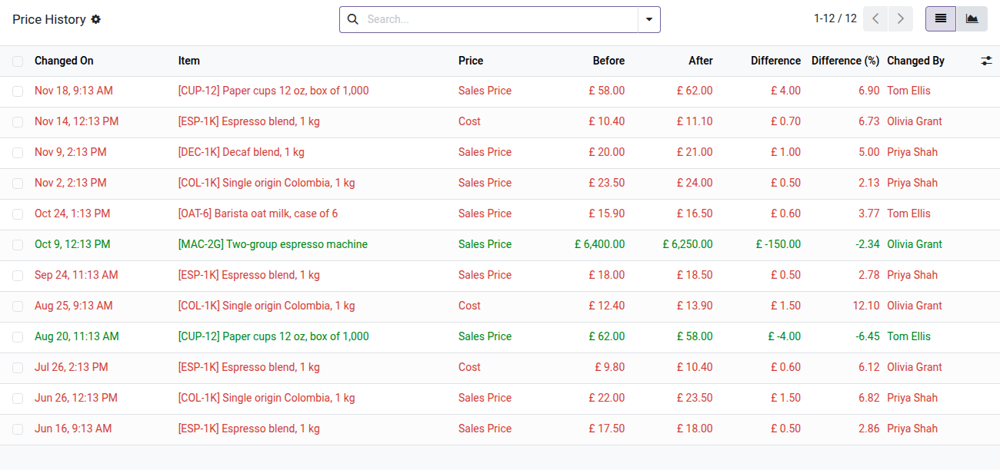
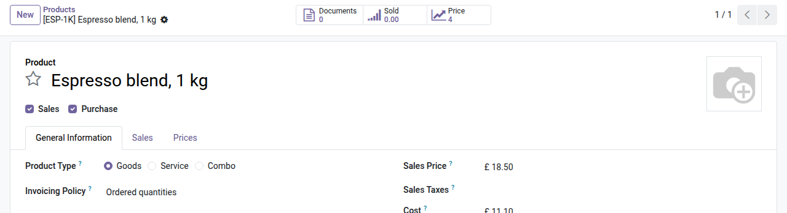

Price History
Every change to a sales price or a cost, with the difference, the date and the author.
Odoo has no price history. The price shown is today's; the one before the last increase no longer exists anywhere, and nobody can say who changed it or when. Yet the question comes up with every customer dispute, every price review and every closing.
What it adds
- 📈 Every change recorded: the old value, the new one, the difference in currency and as a percentage, the date and the author.
- 🏷️ Sales price and cost — the cost per variant and per company, because two subsidiaries can value the same product differently.
- 🔎 Ready-made filters: increases, decreases, current year, grouping by product, by author or by month.
- 🧭 A button on the product form that opens that product's history alone, and a chart to read its trend.
Real screenshots
1. Every price change, and who made it
Before, after, difference in money and in percent, date and author: increases in red, decreases in green.

2. From the product form
The Price button counts the changes of this product and opens its own history.

Why install it
- No automatic purge, unlike the technical logs in the range: a price history that wipes itself after thirty days can no longer answer the only question anyone asks it.
- Cost is a company-dependent field: the module records it company by company, just as Odoo stores it.
- The lines are read-only — a history that can be rewritten is worthless.
- Open source module, LGPL-3 license — it depends only on products, so it works in sales as well as in purchasing or inventory.
Going further
Knowing who changed a price is one thing; deciding who is allowed to change it is another. The OdooSkills range covers cost and margin protection, partitioning of pricelists and product categories, and approval of product changes. Full catalog: apps.odooskills.com.
License LGPL-3 — compatible with Odoo 19.0 Community and Enterprise. Support: apps@odooskills.com.